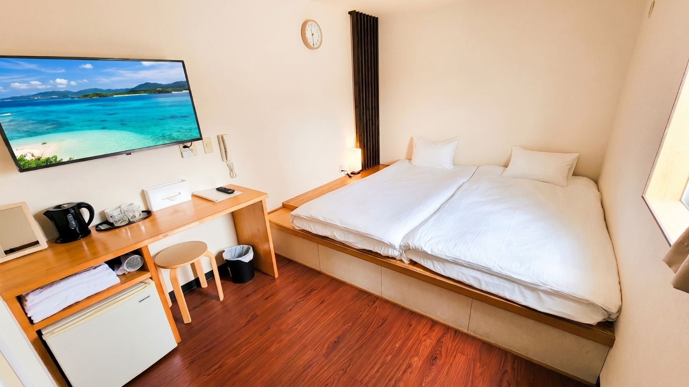

和室 (Japanese-Style Room)
無駄を省き、快適さと居心地の良さを追求した和風のお部屋です。畳の上にふかふかのお布団を敷いてお休みいただくスタイルで、足を伸ばして開放感あふれるひとときをお過ごしいただけます。
日中は沖縄観光やアクティビティをアクティブに楽しみ、夜は畳の上でゆったりと旅の疲れを癒やす、そんな「自分らしい自由な旅」の拠点としてぴったりのお部屋です。小さなお子様連れのご家族やご友人同士のご旅行にも、安心・快適にご利用いただけます。
定員：大人2名（お子様の添い寝は無料です。）